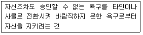
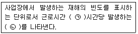
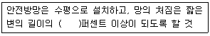

건설안전산업기사 (2016-10-01 기출문제)
1과목: 산업안전관리론
1. 근로자가 중요하거나 위험한 작업을 안전하게 수행하기 위해 인간의 의식수준(Phase) 중 몇 단계 수준에서 작업하는 것이 바람직한가?
- 0 단계
- Ⅰ 단계
- Ⅱ 단계
- Ⅲ 단계
(정답률: 56%)

2. 위험예지훈련 4라운드의 순서가 올바르게 나얼된 것은?
- 현상파악 → 본질추구 → 대책수립 → 목표설정
- 현상파악 → 대책수립 → 본질추구 → 목표설정
- 현상파악 → 본질추구 → 목표설정 → 대책수립
- 현상파악 → 목표설정 → 본질추구 → 대책수립
(정답률: 78%)
3. 매슬로(Maslow)의 욕구단계 이론 중 제2단계의 욕구에 해당하는 것은?
- 사회적 욕구
- 안전에 대한 욕구
- 자아실현의 욕구
- 존경과 긍지에 대한 욕구
(정답률: 81%)
4. 재해통계 작성 시 유의할 점 중 관계가 가장 적은 것은?
- 재해통계를 활용하여 방지대책의 수립이 가능할 수 있어야 한다.
- 재해통계는 구체적으로 표시되고, 그 내용은 용이하게 이해되며 이용할 수 있는 것이어야 한다.
- 재해통계는 정성적인 표현의 도표나 그림으로 표시하여야 한다.
- 재해통계는 항목 내용 등 재해요소가 정확히 파악될 수 있도록 하여야 한다.
(정답률: 77%)
5. 사고예방 대책 5단계 중 작업상황을 파악하고 사고조사를 실시하는 단계는?
- 사실의 발견
- 분석펑가
- 시정방법의 선정
- 시정책의 적용
(정답률: 70%)
6. 안전ㆍ보건표지에서 파란색 또는 녹색에 대한 보조색으로 사용되는 색채는?
- 빨간색
- 검은색
- 노란색
- 흰색
(정답률: 80%)
7. 안전관리조직의 형태 중 라인(Line)형의 특징이 아닌 것은?
- 소규모 사업장에 적합하다.
- 경영자의 조언과 자문 역할을 한다.
- 생산조직 전체에 안전관리 기능을 부여한다.
- 명령과 보고가 상하관계뿐이므로 간단명료 하다.
(정답률: 60%)
8. 그림에서 안전모의 부품 명칭이 틀린 것은? (문제 오류로 복원중입니다. 정확한 내용을 아시는 분께서는 오류신고를 통하여 내용 작성 부탁 드립니다. 정답은 1번입니다.)
- ⓐ : 머리고정대
- ⓑ : 충격흡수재
- ⓒ : 챙(차양)
- ⓓ : 턱끈
(정답률: 77%)
9. 산업재해조사표에서 재해발생 원인 중 작업ㆍ환경적 요인에 해당하지 않는 것은?
- 점검ㆍ장비의 부족
- 작업자세ㆍ동작의 결함
- 작업방법의 부적절
- 작업정보의 부적절
(정답률: 42%)
10. 일반적으로 태도교육의 효과를 높이기 위하여 취할 수 있는 바람직한 교육방법은?
- 강의식
- 프로그램 학습법
- 토의식
- 문답식
(정답률: 57%)
11. 무재해운동의 3원칙에 해당되지 않는 것은?
- 참가의 원칙
- 무의 원칙
- 예방의 원칙
- 선취의 원칙
(정답률: 62%)
12. 안전점검표의 작성 시 유의사항이 아닌 것은?
- 중요도가 낮은 것부터 높은 순서대로 만들 것
- 점검표 내용은 구체적이고 재해 방지에 효과가 있을 것
- 사업장 내 점검기준을 기초로 하여 점검자 자신이 점검목적, 사용시간 등을 고려하여 작성할 것
- 현장감독자용 점검표는 쉽게 이해할 수 있는 내용이어야 할 것
(정답률: 78%)
13. 스트레스(Stress)에 관한 설명으로 가장 적절한 것은?
- 스트레스 상황에 직면하는 기회가 많을수록 스트레스 발생 가능성은 낮아진다.
- 스트레스는 직무 몰입과 생산성 감소의 직접적인 원인이 된다.
- 스트레스는 부정적인 측면만 가지고 있다.
- 스트레스는 나쁜 일에서만 발생한다.
(정답률: 80%)
14. 직무만족에 긍정적인 영향을 미칠 수 있고, 그 결과 개인 생산능력의 증대를 가져오는 인간의 특성을 의미하는 용어는?
- 위생요인
- 동기부여 요인
- 성숙-미성숙
- 의식의 우회
(정답률: 81%)
15. 적응기제(Adjustment Mechanism) 중 다음에서 설명하는 것은 무엇인가?

- 투사
- 합리화
- 보상
- 동일화
(정답률: 57%)
16. 기억과정 중 과거에 경험했던 것과 비슷한 상태에 부딪쳤을 때 떠오르는 것을 무엇이라 하는가?
- 파지(Retention)
- 기명(Memorizing)
- 재생(Recall)
- 재인(Recognition)
(정답률: 65%)
17. 「산업안전보건법」상 특별안전ㆍ보건교육 대상 작업이 아닌 것은?
- 건설용 리프트 곤돌라를 이용한 작업
- 전압이 50V인 정전 및 활선작업
- 화학설비 중 반응기, 교반기, 추출기의 사용 및 세척작업
- 액화석유가스 수소가스 등 인화성 가스 또는 폭발성 물질 증 가스의 발생장치 취급 작업
(정답률: 77%)
18. 리더의 행동유형 측면에서 부하들과 상담하며, 부하의 의견을 고려하는 형태의 리더십은?
- 참여적 리더십
- 지원적 리더십
- 지시적 리더십
- 성취 지항적 리더십
(정답률: 71%)
19. 재해율의 지표 중 도수율에 관한 다음 설명의 ( )안에 알맞은 것은?

- ㉠ 100만, ㉡ 재해건수
- ㉠ 1000, ㉡ 근로손실 일수
- ㉠ 1000, ㉡ 재해건수
- ㉠ 100만, ㉡ 근로손실 일수
(정답률: 61%)
20. 작업의 종류나 내용에 따라 교육범위나 정도가 달라지는 이론교육 방법은?
- 지식교육
- 정신교육
- 태도교육
- 기능교육
(정답률: 52%)
2과목: 인간공학 및 시스템안전공학
21. 인간 성능에 관한 척도와 가장 거리가 먼 것은?
- 빈도수 척도
- 지속성 척도
- 자연성 척도
- 시스템 척도
(정답률: 60%)
22. 결함수(FT) 기호의 정의로 틀린 것은?
- 1차 사상은 외적인 원인에 의해 발생하는 사상이다.
- 결함사상은 시스템 분석에 있어 좀 더 발전시켜야 하는 사상이다.
- 기본사상은 고장원인이 분석되었기 때문에 더 이상 분석할 필요가 없는 사상이다.
- 정상적인 사상은 두 가지 상태가 규정된 시간 내에 일어날 것으로 기대 및 예정되는 사상이다.
(정답률: 35%)
23. 결함수 분석의 최소 컷셋과 가장 관련이 없는 것은?
- Boolean Algebra
- Fussell Algorithm
- Generic Algorithm
- Limnios & Ziani Algorithm
(정답률: 53%)
24. 목과 어깨 부위의 근골격계 질환 발생과 관련하여 인과관계가 가장 적은 것은?
- 진동
- 반복작업
- 과도한 힘
- 작업자세
(정답률: 70%)
25. 에너지 대사율(RMR)에 의한 작업강도에서 경작업이란 작업강도가 얼마인 작업을 의미하는가?
- 1~2
- 2~4
- 4~7
- 7~9
(정답률: 52%)
26. 레버를 10° 움직이면 표시장치는 1cm 이동하는 조종 장치가 있다. 레버의 길이가 20cm 라고 하면 이 조종 장치의 통제표시비(C/D비)는 약 얼마인가?
- 1.27
- 2.38
- 3.49
- 4.51
(정답률: 44%)
27. 작업장 인공조명 설계 시 고려사항으로 가장 거리가 먼 것은?
- 조도는 작업상 충분할 것
- 광색은 붉은색에 가까울 것
- 취급이 간단하고 경제적일 것
- 유해가스를 발생하지 않고, 폭발성이 없을 것
(정답률: 77%)
28. 어떤 물체나 표면에 도달하는 빛의 단위 면적당 밀도를 무엇이라 하는가?
- 광량
- 광도
- 조도
- 반사율
(정답률: 65%)
29. 의자 좌판의 높이를 설계하기 위한 것으로 가장 적합한 인체계측자료의 응용 원칙은?
- 최소 집단치를 위한 설계
- 최대 집단치를 위한 설계
- 펑균치를 기준으로 한 설계
- 최대 빈도치를 기준으로 한 설계
(정답률: 47%)
30. 시스템 안전계획의 수립 및 작성 시 반드시 기술하여야 하는 것으로 거리가 가장 먼 것은?
- 안전성 관리 조직
- 시스템의 신뢰성 분석 비용
- 작성되고 보존하여야 할 기록의 종류
- 시스템 사고의 식별 및 평가를 위한 분석법
(정답률: 63%)
31. 촉각적 표시장치에서 기본 정보 수용기로 주로 사용되는 것은?
- 귀
- 눈
- 코
- 손
(정답률: 74%)
32. 동작경제의 원칙이 아닌 것은?
- 동작의 범위는 최대로 할 것
- 동작은 연속된 곡선운동으로 할 것
- 양손은 좌우 대칭적으로 움직일 것
- 양손은 동시에 시작하고 동시에 끝내도록 할 것
(정답률: 56%)
33. 결함수 분석에서 사용되는 사상기호로서 결함사상이 아닌 발생이 예상되는 사상기호는 무엇인가? (보기 오류로 복원중입니다.보기 내용을 아시는 분들께서는 오류 신고를 통하여 보기 작성 부탁 드립니다. 정답은 4번입니다.)
- 복원중
- 복원중
- 복원중
- 복원중
(정답률: 67%)
34. 소음이 심한 기계로부터 1.5m 떨어진 곳의 음압수준이 100dB라면 이 기계로부터 5m 떨어진 곳의 음압수준은 약 얼마인가?
- 85dB
- 90dB
- 96dB
- 102dB
(정답률: 40%)
35. 화학설비에 대한 안정성 평가 5단계 중 정성적 평가의 실시 단계는?
- 제1단계
- 제2단계
- 제3단계
- 제4단계
(정답률: 56%)
36. 시스템 설계자가 통상적으로 하는 평가방법 중 거리가 먼 것은?
- 기능 펑가
- 성능 펑가
- 도입 펑가
- 신뢰성 펑가
(정답률: 47%)
37. 각각 10000시간의 평균수명을 가진 A, B 두 부품이 병렬로 이루어진 시스템의 평균수명은 얼마인가? (단, 요소 AB의 평균수명은 지수분포를 따른다.)
- 5000시간
- 10000시간
- 15000시간
- 20000시간
(정답률: 54%)
38. 아날로그(Analog) 표시장치의 선택 시 고려해야 할 사항으로 가장 적절한 것은?
- 눈금의 증가는 시계 반대방항이 적합하다.
- 일반적으로 고정눈금에서 지침이 움직이는 것이 좋다.
- 온도계나 고도계에 사용되는 눈금이나 지핌은 수평표시가 바람직하다.
- 이동요소의 수동조절이 필요할 때에는 지침보다 눈금을 조절할 수 있어야 한다.
(정답률: 60%)
39. 인간-기계 시스템에서의 기본적인 기능으로 볼 수 없는 것은?
- 행동 기능
- 정보의 수용
- 정보의 저장
- 정보의 설계
(정답률: 56%)
40. 어떤 장치의 이상을 알려주는 경보기가 있어서 그것이 울리면 일정 시간 이내에 장치를 정지하고 상태를 점검하여 필요한 조치를 하게 된다. 그런데 담당 작업자가 정지 조작을 잘못하여 장치에 고장이 발생하였다. 이때 작업자가 조작을 잘못한 실수를 무엇이라고 하는가?
- Primary Error
- Command Error
- Omission Error
- Secondary Error
(정답률: 57%)
3과목: 건설시공학
41. 공업화 공법(PC 공법)에 의한 콘크리트 공사의 특징과 관련이 없는 것은?
- 프리패브 공법이기 때문에 현장에서의 공정이 단축된다.
- 기상의 영항을 덜 받는다.
- 각 부품의 접합부가 일체화되기가 어럽다.
- 품질의 균질성을 기대하기 어렵다.
(정답률: 61%)
42. 철근의 이음방식이 아닌 것은?
- 용접 이음
- 겹침 이음
- 갈고리 이음
- 기계적 이음
(정답률: 72%)
43. 거푸집 공사의 발전 방향으로 옳지 않은 것은?
- 소헝 패널 위주의 거푸집 제작
- 설치의 단순화를 위한 유닛(Unit)화
- 높은 전용 횟수
- 부재의 경량화
(정답률: 67%)
44. 주로 이음이 필요한 지중보 등에서 특수 리브라스(Rib Lath)와 목재 프레임을 부속철물로 고정하고 콘크리트를 타설함으로써 거푸집 해체작업이 필요 없는 공법은?
- 터널 폼
- 메탈라스 폼
- 슬라이딩 폼
- 플라잉 폼
(정답률: 60%)
45. 콘크리트 타설작업의 기본원칙 중 옳은 것은?
- 타설구획 내의 가까운 곳부터 타설한다.
- 타설구획 내의 콘크리트는 휴식시간을 가지면서 타설한다.
- 낙하높이는 가능한 크게 한다.
- 타설위치에 가까운 곳까지 펌프, 버킷 등으로 운반하여 타설한다.
(정답률: 67%)
46. 말뚝 설치공법을 타입공법과 매입공법으로 구분할 때 다음 중 타입공법에 해당하는 것은?
- 진동 공법
- 중굴 공법
- 선굴착 공법
- 워터제트 공법(Water Jet)
(정답률: 53%)
47. 지름 3~5cm 정도의 파이프 끝에 여과기를 달아 1~2m 간격으로 박고, 이를 수평으로 굵은 파이프에 연결하여 진공으로 물을 뽑아내어 지하수위를 저하시키는 공법은?
- 웰 포인트 공법
- 슬러리 월 공법
- 페이퍼 드레인 공법
- 샌드 드레인 공법
(정답률: 70%)
48. 지반의 토질시험 과정에서의 보링 구멍을 이용하여 +자형 날개를 지반에 박고 이것을 회전시켜 점토의 접착력을 판별하는 토질 시험방법은?
- 표준관입시험
- 베인전단시험
- 지내력시험
- 압밀시험
(정답률: 67%)
49. 다음 건설기계 중 이동식 양중장비에 해당하는 것은?
- 타워 크레인
- 크롤러 크레인
- 러핑형 타워 크레인
- 지브 크레인
(정답률: 68%)
50. 2개 이상의 기둥을 1개의 기초판으로 받치는 기초는?
- 독립기초
- 복합기초
- 호박돌기초
- 말뚝기초
(정답률: 65%)
51. 순수형 CM의 공사단계별 기본업무 중 시공단계의 업무가 아닌 것은?
- 품질검사
- 작업변화 승인 및 계약 변경
- 기록문서의 제출
- 시공사와 발주자 간 분쟁 해결
(정답률: 42%)
52. 토공사용 굴착기계 중 위치한 지면보다 낮은 우물통과 같은 협소한 장소의 흙을 퍼올리는데 가장 적함한 장비는?
- 파워쇼벨
- 지브크레인
- 스크레이퍼
- 클램셀
(정답률: 74%)
53. 공정계획에서 공정표 작성 시 주의사항으로 옳지 않은 것은?
- 기초공사는 옥외 작업이기 때문에 기후에 좌우되기 쉽고 공정 변경이 많다.
- 노무, 재료, 시공기기는 적절하게 준비할 수 있도록 계획한다.
- 공기를 단축하기 위하여 다른 공사와 중복하여 시공할 수 없다.
- 마감공사는 기후에 좌우되는 것이 적으나 공정단계가 많으므로 충문한 공기(工期)가 필요하다.
(정답률: 69%)
54. 철근 콘크리트 공사에서 철근의 최소 피목두께를 확보하는 이유로 볼 수 없는 것은?
- 콘크리트 산화막에 의한 철근의 부식 방지
- 콘크리트의 조기 강도 증진
- 철근과 콘크리트의 부착응력 확보
- 화재, 염해, 중성화 등으로부터의 보호
(정답률: 60%)
55. 콘크리트 공사에서 거푸집 설계 시 고려사항으로 가장 거리가 먼 것은?
- 콘크리트의 측압
- 콘크리트 타설 시의 하중
- 콘크리트 타설 시의 충격과 진동
- 콘크리트의 강도
(정답률: 69%)
56. 기둥거푸집의 고정 및 측압 버림용으로 사용되는 부속재료는?
- 세퍼레이터
- 컬럼밴드
- 스페이서
- 잭 서포트
(정답률: 58%)
57. 공정관리에 있어서 자원배당의 대상이 아닌 것은?
- 인력
- 장비
- 자재
- 계약
(정답률: 72%)
58. 공사계약 방식 중 계약기간 및 예산에 따른 계약에서 계악의 이행에 수 년을 요하는 경우 체결하는 계약은?
- 단년도 계약
- 개산 계약
- 장기계속 계약
- 총액 계약
(정답률: 74%)
59. 철골구조의 용접 결함에 대한 검사방법이 아닌 것은?
- 자연전극 전위법
- 육안검사
- 염색침투 탐상검사
- 초음파 탐상검사
(정답률: 44%)
60. 입찰의 절차에 있어 입찰공고에 포함되는 주요 항목이 아닌 것은?
- 계약에 관한 분쟁의 해결방법
- 입찰의 일시와 장소
- 개략적인 공사의 특성, 유형 및 규모
- 발주자와 설계자의 명칭과 주소
(정답률: 67%)
4과목: 건설재료학
61. KSL 5201에 따른 1종 보통 포틀랜드시멘트의 28일 압축강도 기준으로 옳은 것은?
- 10MPa 이상
- 12.5MPa 이상
- 22.5MPa 이상
- 42.5MPa 이상
(정답률: 38%)
62. 재료의 열에 관한 성질 중 ‘재료 표면에서의 열전달→재료 속에서의 열전도→재료 표면에서의 열 전달’과 같은 열이동을 나타내는 용어는?
- 열용량
- 열관류
- 비열
- 열팽창계수
(정답률: 67%)
63. 금속의 종류 중 아연에 관한 설명으로 옳지 않은 것은?
- 인장강도나 연신율이 낮은 편이다.
- 이온화 경항이 크고, 구리 등에 의해 침식된다.
- 아연은 수중에서 부식이 빠른 속도로 진행된다.
- 철판의 아연도금에 널리 사용된다.
(정답률: 51%)
64. 금속, 유리, 플라스틱, 목재, 도자기, 고무 등의 접착에 우수한 성질을 나타내며 특히 알루미늄과 같은 경금속 접착에 사용되는 접착제는?
- 에폭시 수지 접착제
- 아크릴 수지 집착제
- 알키드 수지 접착제
- 폴리에스테스 수지 접착제
(정답률: 65%)
65. 점토소성제품의 특징에 관한 설명으로 옳은 것은?
- 내열성 및 전기절연성이 부족하다.
- 화학적 저항성, 내후성이 우수하다.
- 백화현상 발생의 우려가 적다.
- 연성이며 가공이 용이하다.
(정답률: 42%)
66. 9cm×9cm×210cm 목재의 건조 전 질량이 7.83kg이고 건조 후 질량이 6.8kg이었다면 이 목재의 대략적인 함수율은? (단, 절대건조상태가 될 때까지 건조)
- 15%
- 20%
- 25%
- 30%
(정답률: 53%)
67. 각종 도료 및 도료의 원료에 관한 설명으로 옳지 않은 것은?
- 알키드 수지를 활용한 도료는 건조 초기의 내수성이 떨어지며 내알칼리성이 좋지 못하다.
- 바니시는 수지류를 건성유 또는 휘발성 용제로 용해한 것이다.
- 가소제는 건조된 도막에 탄성ㆍ교칙성 등을 줌으로써 내구력을 증가시키는 데 쓰이는 도막 형성 부요소이다.
- 시너(Thinner)는 도막형성재로서 도막의 주요소를 용해시킨다.
(정답률: 46%)
68. 회반죽 바름의 주원료가 아닌 것은?
- 소석회
- 점토
- 모래
- 해초풀
(정답률: 60%)
69. 점토의 종류별 특성과 용도에 대한 설명으로 옳지 않은 것은?
- 자토는 백색으로 가소성이 부족하며 도자기 원료로 쓰인다.
- 석기점토는 유색의 치밀한 구조로 내화도가 높으며 유색 도기의 원료로 쓰인다.
- 석회질 점토는 용해되기가 어려우며 경질 도기의 원료로 쓰인다.
- 내화점토는 회백색 또는 담색이며 내화벽돌, 유약 원료로 쓰인다.
(정답률: 45%)
70. 물-시멘트비 65%로 콘크리트 1m2를 만드는 데 필요한 물의 양으로 적당한 것은? (단, 콘크리트는 1m2당 시멘트 8포대이며, 1포대는 40kg임)
- 0.1m2
- 0.2m2
- 0.3m2
- 0.4m2
(정답률: 49%)
71. 목재의 강도 중 가장 큰 것은? (단, 섬유에 펑행한 가력 방향임)
- 인장강도
- 휨강도
- 압축강도
- 전단강도
(정답률: 63%)
72. 미장공사에서 바탕청소를 하는 가장 주된 목적은?
- 바름층의 경화 및 건조 촉진
- 바탕층의 강도 증진
- 바름층과의 접착력 향상
- 바름층의 강도 증진
(정답률: 72%)
73. 경랑 콘크리트 제작에 사용되는 골재와 거리가 먼 것은?
- 펄라이트
- 화산암
- 중정석
- 펑창질석
(정답률: 42%)
74. 강의 열처리란 금속재료에 필요한 성질을 주기 위하여 가열 또는 냉각하는 조작을 말하는데 다음 중 강의 열처리 방법에 해당하지 않는 것은?
- 늘림
- 불림
- 풀림
- 뜨임질
(정답률: 47%)
75. 물을 가한 후 24시간 이내에 보통포틀랜드 시멘트의 4주 강도 정도가 발현되며, 내화성이 풍부한 시멘트는?
- 팽창 시멘트
- 중용열 시멘트
- 고로 시멘트
- 알루미나 시멘트
(정답률: 52%)
76. 다음 석재 중에서 외장용으로 적합하지 않은 것은?
- 대리석
- 화강석
- 안산암
- 점판암
(정답률: 67%)
77. 콘크리트용 골재에 관한 설명 중 옳지 않은 것은?
- 골재는 시멘트 페이스트와의 부칙이 강한 표면 구조를 가재야 한다.
- 부순 골재는 실적률이 크고 콘크리트에 사용될 때 워커빌리티가 좋아진다.
- 골재의 강도는 경화 시멘트 페이스트의 강도 이상이어야 한다.
- 골재는 비중이 작은 것일수록 공극과 내부균열이 많다.
(정답률: 44%)
78. 천연수지ㆍ합성수지 또는 역청질 등을 건섬유와 같이 얼반응시켜 건조제를 넣고 용제에 녹인 것은?
- 유성페인트
- 래커
- 바니시
- 에나멜 페인트
(정답률: 51%)
79. 강재의 인장시험 시 탄성에서 소성으로 변하는 경계는?
- 비례한계점
- 변형경화점
- 항복점
- 인장강도점
(정답률: 62%)
80. 시멘트 모르타르 바름의 작업성이나 부착력 향상을 위해 첨가하는 혼화제에 속하지 않는 것은?
- 메틸 셀룰로스(CMC)
- 합성수지에멀션
- 고무계 라텍스
- 에폭시 수지
(정답률: 35%)
5과목: 건설안전기술
81. 웰 포인트, 샌드드레인공법 작업 전에는 압밀침하를 예상하여 간극수압을 측정하여야 한다. 이 간극수압을 측정하는 기구는 무엇인가?
- Piezometer
- Tiltmeter
- Inclinometer
- Water level meter
(정답률: 46%)
82. 다음 중 차랑계 건설기계에 해당되지 않는 것은?
- 곤돌라
- 향타기 및 향발기
- 어스드릴
- 앵글도저
(정답률: 45%)
83. 철골작업을 중지하여야 하는 경우의 강우량 기준으로 옳은 것은?
- 시간당 0.5mm 이상
- 시간당 1mm 이상
- 시간당 2mm 이상
- 시간당 3mm 이상
(정답률: 72%)
84. 콘크리트 타설 시 안전수칙 사항으로 옳은 것은?
- 콘크리트는 한곳으로 치우쳐 타설하여야 한다.
- 콘크리트 타설작업 시 거푸집 붕괴의 위험이 발생할 우려가 있더라도 타설작업을 우선완료하고 나서 상황을 판단한다.
- 바닥 위에 흘린 콘크리트는 그대로 양생하도록 한다.
- 최상부의 슬래브(Slab)는 이어붓기를 가급적 피하고 일시에 전체를 타설한다.
(정답률: 68%)
85. 건설공사에서 발코니 단부, 엘리베이터 입구, 재료 반입구 등과 같이 벽면 혹은 바닥에 추락의 위험이 우려되는 장소를 의미하는 용어는?
- 중간난간대
- 가설통로
- 개구부
- 비상구
(정답률: 67%)
86. 다음은 산업안전보건법렁에 따른 추략의 방지를 위하여 설치하는 안전방망에 관한 내용이다. ( ) 안에 들어갈 내용으로 옳은 것은?

- 8
- 12
- 15
- 20
(정답률: 60%)
87. 사다리식 통로의 설치기준으로 옳지 않은 것은?
- 폭은 30cm 이상으로 할 것
- 발판과 벽과의 사이는 15cm 이상의 간격을 유지할 것
- 사다리의 상단은 걸쳐좋은 지점으로부터 60cm 이상 올라가도록 할 것
- 사다리식 통로의 길이가 10m 이상인 경우에는 7m 이내마다 계단참을 설치할 것
(정답률: 59%)
88. 기계운반하역 시 걸이 작업의 준수사항으로 옳지 않은 것은?
- 와이어로프 등은 크레인의 훅 중심에 걸어야 한다.
- 인앙 를체의 안정을 위하여 2줄 걸이 이상을 사용하여야 한다.
- 매다는 각도는 70° 정도로 한다.
- 근로자를 매달린 물체 위에 탑승시키지 않아야 한다.
(정답률: 66%)
89. 콘크리트의 재료분리현상 없이 거푸집 내부에 쉽게 타설할 수 있는 정도를 나타내는 것은?
- Bleeding
- Thixotropy
- Workability
- Finishability
(정답률: 64%)
90. 기존 건물에서 인접된 장소에서 새로운 깊은 기초를 시공하고자 한다. 이 때 기존 건물의 기초가 얖아 안전상 보강하려고 할 때 적당한 공법은?
- 압성토 공법
- 언더피닝 공법
- 선행 재하공법
- 치환공법
(정답률: 68%)
91. 비계의 설치작업 시 유의사항으로 옳지 않은 것은?
- 항상 수평, 수직이 유지되도록 한다.
- 파괴, 도괴, 동요에 대한 안전성을 고려하여 설치한다.
- 비계의 도괴 방지를 위해 가새 등 경사재는 설치하지 않는다.
- 외쪽 비계와 같은 특수비계는 문제점을 충분히 검토하여 설치한다.
(정답률: 68%)
92. 슬레이트, 선라이트 등 강도가 약한 재료로 덮은 지붕 위에서 작업을 할 때 발이 빠지는 등의 위험을 방지하기 위한 산업안전보건법령에 따른 작업발판의 최소 폭 기준은?
- 20cm 이상
- 30cm 이상
- 40cm 이상
- 50cm 이상
(정답률: 65%)
93. 지반의 붕괴, 구축물의 붕괴 또는 토석의 낙하 등에 의하여 근로자가 위험해질 우려가 있는 경우 그 위험을 방지하기 위하여 취해야 할 조치로 옳지 않은 것은?
- 흙막이 지보공 제거
- 토석의 낙하 원인이 되는 빗물이나 지하수 등을 배제
- 낙하의 위험이 있는 토석 제거
- 옹벽 설치
(정답률: 62%)
94. 현장에서 근로자가 안전하게 통행할 수 있도록 통로에 설치해야 하는 조명시설은 최소 몇 럭스 이상이어야 하는가?
- 75Lux 이상
- 80Lux 이상
- 85Lux 이상
- 90Lux 이상
(정답률: 68%)
95. 인력에 의한 하물 운반 시 준수사항으로 옳지 않은 것은?
- 수평거리 운반을 원칙으로 한다.
- 운반 시의 시선은 진행 방항을 항하고 뒷걸음 운반을 하여서는 아니 된다.
- 쌓여 있는 하물을 운반할 때에는 중간 또는 하부에서 뽑아내어서는 아니 된다.
- 어깨 높이보다 낮은 위치에서 하물을 들고 운반하여서는 아니 된다.
(정답률: 69%)
96. 가설구조를 부재의 강성이 부족하여 가늘고 긴 부재가 압축력에 의하여 파괴되는 현상은?
- 좌굴
- 피로파괴
- 지압파괴
- 폭열현상
(정답률: 63%)
97. 향타기 또는 향발기의 권상용 와이어로프의 안전계수 기준은?
- 2 이상
- 3 이상
- 4 이상
- 5 이상
(정답률: 57%)
98. 건설공사 착공 시 유해ㆍ험방지계획서 제출대상 사업 규모에 해당되지 않는 것은?
- 터널 건설 공사
- 깊이가 15m 인 굴착공사
- 지상 높이가 25m 인 건축물 건설 공사
- 최대지간길이가 55m 인 교량건설 공사
(정답률: 64%)
99. 유한사면에서 사면기울기가 비교적 완만한 정성토에서 주로 발성되는 사면파괴의 형태는?
- 저부파괴
- 사면선단파괴
- 사면내파괴
- 국부전단파괴
(정답률: 45%)
100. 양중기의 와이어로프 등 달기구의 안전계수 기준으로 옳은 것은? (단, 화물의 하중을 직 접 지지하는 달기와이어로프 또는 달기체인의 경우)
- 4 이상
- 5 이상
- 7 이상
- 10 이상
(정답률: 53%)